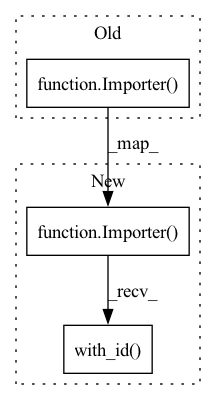

Pattern ID :26638

Before Change
GDPComponent.DataSchema.name)[0],
artifact_type=standard_artifacts.Schema)
statistics_data = Importer(
instance_name=GDPComponent.DataStatistics.name,
source_uri=data_pipeline.get_artifacts_uri_by_component(
GDPComponent.DataStatistics.name)[0],
artifact_type=standard_artifacts.ExampleStatistics)
component_list.extend([data, schema_data, statistics_data])
datapoints = data.outputs.result
After Change
artifact_type=standard_artifacts.Schema).with_id(
GDPComponent.DataSchema.name)
statistics_data = Importer(
source_uri=data_pipeline.get_artifacts_uri_by_component(
GDPComponent.DataStatistics.name)[0],
artifact_type=standard_artifacts.ExampleStatistics).with_id(
GDPComponent.DataStatistics.name)
component_list.extend([data, schema_data, statistics_data])
datapoints = data.outputs.result
In pattern: SUPERPATTERN
Frequency: 3
Non-data size: 3
Instances
Fragment ID: 79682011
Project Name: maiot-io/zenml
Commit Name: 8fd31dd9ab510cbef250e72ca5fe44edfeae7bd0
Time: 2021-05-19
Author: bariscandurak@hotmail.com
File Name: zenml/pipelines/training_pipeline.py
M Class Name: TrainingPipeline
N Class Name: TrainingPipeline
M Method Name: get_tfx_component_list(2)
N Method Name: get_tfx_component_list(2)
M Parent Class: BasePipeline
N Parent Class: BasePipeline
M File Name: zenml/pipelines/training_pipeline.py
N File Name: zenml/pipelines/training_pipeline.py
M Start Line: 93
M End Line: 109
N Start Line: 93
N End Line: 109
'>
Before Change
data_pipeline = self.datasource.get_data_pipeline_from_commit(
self.datasource_commit_id)
data = Importer(
instance_name=GDPComponent.DataGen.name,
source_uri=data_pipeline.get_artifacts_uri_by_component(
GDPComponent.DataGen.name)[0],
artifact_type=standard_artifacts.Examples)
component_list.extend([data])
//////////////////////////
// TOKENIZER //
After Change
self.datasource.artifact_store = self.artifact_store
self.datasource_commit_id = self.datasource.commit()
data = Importer(
source_uri=
self.datasource.get_artifact_uri_by_component_and_commit_id(
self.datasource_commit_id, GDPComponent.DataGen.name)[0],
artifact_type=standard_artifacts.Examples).with_id(
GDPComponent.DataGen.name)
schema_data = Importer(
source_uri=
self.datasource.get_artifact_uri_by_component_and_commit_id(
'>
Fragment ID: 79682007
Project Name: maiot-io/zenml
Commit Name: 8f5c786696ddd244d699f5f42557785e8307df48
Time: 2021-06-10
Author: htahir111@gmail.com
File Name: zenml/pipelines/nlp_pipeline.py
M Class Name: NLPPipeline
N Class Name: NLPPipeline
M Method Name: get_tfx_component_list(2)
N Method Name: get_tfx_component_list(2)
M Parent Class: BasePipeline
N Parent Class: BasePipeline
M File Name: zenml/pipelines/nlp_pipeline.py
N File Name: zenml/pipelines/nlp_pipeline.py
M Start Line: 106
M End Line: 116
N Start Line: 107
N End Line: 136
'>
Before Change
data_pipeline = self.datasource.get_data_pipeline_from_commit(
self.datasource_commit_id)
data = Importer(
instance_name=GDPComponent.DataGen.name,
source_uri=data_pipeline.get_artifacts_uri_by_component(
GDPComponent.DataGen.name)[0],
artifact_type=standard_artifacts.Examples)
component_list.extend([data])
// Handle timeseries
// TODO: [LOW] Handle timeseries
After Change
self.datasource.artifact_store = self.artifact_store
self.datasource_commit_id = self.datasource.commit()
data = Importer(
source_uri=
self.datasource.get_artifact_uri_by_component_and_commit_id(
self.datasource_commit_id, GDPComponent.DataGen.name)[0],
artifact_type=standard_artifacts.Examples).with_id(
GDPComponent.DataGen.name)
component_list.extend([data])
// Handle timeseries
'>
Fragment ID: 79682005
Project Name: maiot-io/zenml
Commit Name: 8f5c786696ddd244d699f5f42557785e8307df48
Time: 2021-06-10
Author: htahir111@gmail.com
File Name: zenml/pipelines/infer_pipeline.py
M Class Name: BatchInferencePipeline
N Class Name: BatchInferencePipeline
M Method Name: get_tfx_component_list(2)
N Method Name: get_tfx_component_list(2)
M Parent Class: BasePipeline
N Parent Class: BasePipeline
M File Name: zenml/pipelines/infer_pipeline.py
N File Name: zenml/pipelines/infer_pipeline.py
M Start Line: 121
M End Line: 130
N Start Line: 122
N End Line: 134